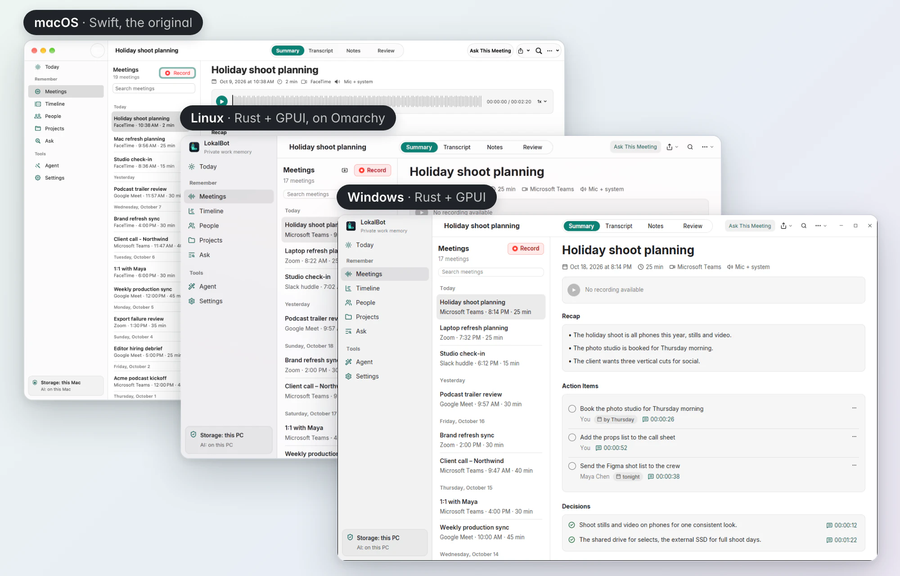
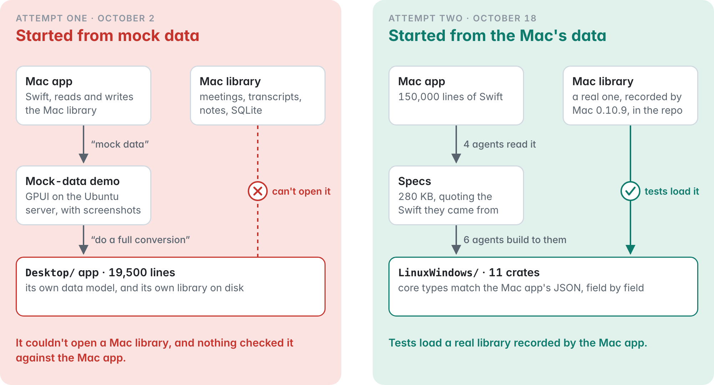
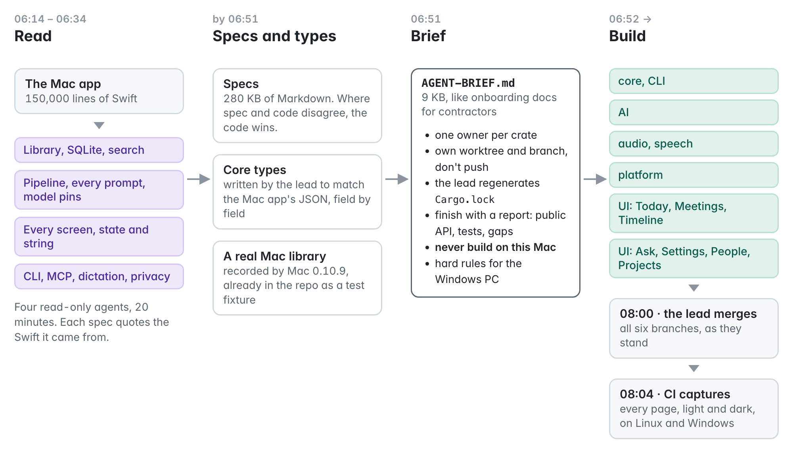
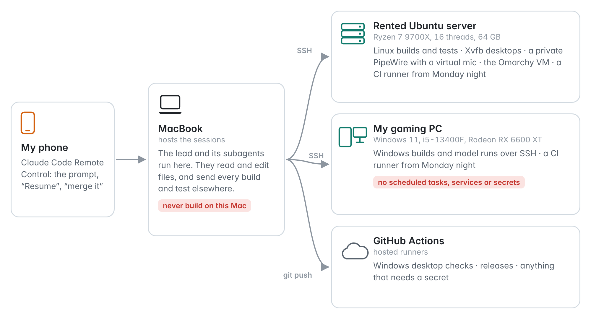
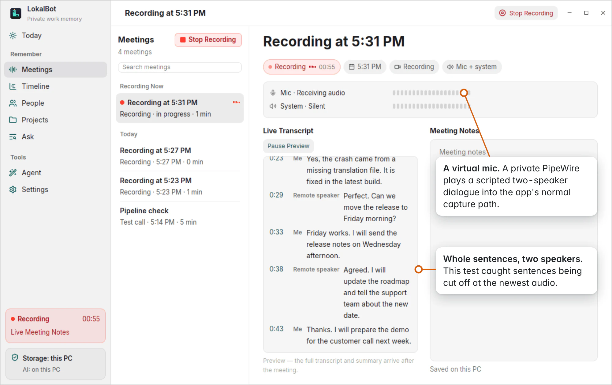
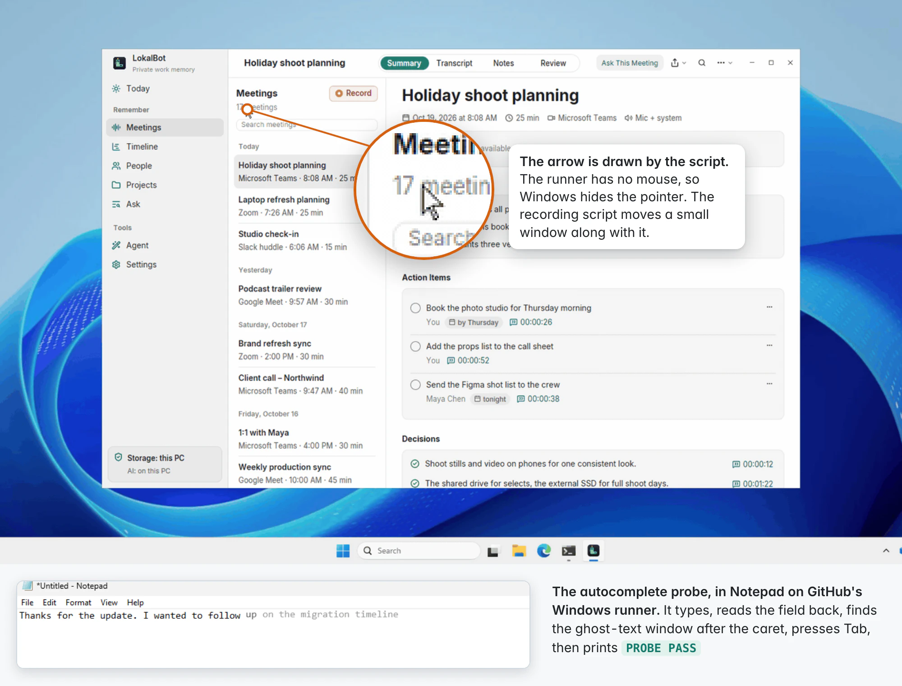
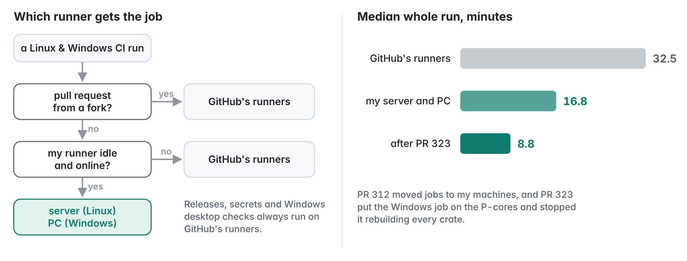

On Sunday, October 18, at about six in the morning, I sent a coding agent this message from my phone:
Build a fresh take at implementation of LokalBot for Linux and Windows users with Rust and GPUI, matching the current experience on macOS where it makes sense, but it doesn't have to be completely identical as platforms differ. Build it all in a single PR and add screenshots of both apps running. Use sub agents to speed up and parallelize the work if it helps.
The pull request was merged on Monday afternoon, and on Tuesday around noon I published LokalBot 0.11.0 with installers and packages for Windows and Linux.
I was away from my desk for most of it. On Sunday I sent the session five messages, all from my phone through Claude Code's Remote Control, and my Mac was in use for eleven minutes that day, almost all of it in a chat app.
I don't want to make this sound easier than it was. The agents wrote the code quickly, but that was the part that needed the least from me. The port worked because of the setup around the code: specs written from the Mac app before any new code, ways for the agents to check an app they couldn't see, machines to build on, some rules for agents working side by side, and a few decisions I had to make myself. That's what this post is about, along with a first attempt that didn't work out.


What LokalBot is
LokalBot is a private work memory app for the Mac. It records and transcribes meetings on device, writes notes with a local model, remembers what was on screen, completes text in other apps, and has an agent mode that can work on your files with your approval. The Mac app is about 150,000 lines of Swift, and almost every feature depends on something the operating system provides, from capturing system audio to reading text in other apps. Porting it means finding a way to do each of those on Windows and Linux.
The Windows and Linux version is still an alpha.
The first attempt
This wasn't my first try. On October 2 I asked Codex what my options were for Linux and Windows, then asked it to build "just a mock data" version so I could see screenshots, and then, since it looked pretty good, to "do a full conversion and open a PR".
By lunchtime I had a working app with a native interface and CI on both platforms. A second agent reviewed it and found some real bugs, and the first agent fixed them. Then the PR sat for 16 days, and I closed it.
The bugs weren't the problem. The app only looked like LokalBot. It had its own data model and its own library on disk, so it couldn't open anything recorded on a Mac, and nothing in it would show when it drifted from how the Mac app behaves. In hindsight that came from my own request for a mock-data version. The demo became the base for everything after it.


The second attempt: specs first
The second attempt ran in Claude Code with a different prompt. I don't think the tool made the difference, since Codex later wrote the port's 24 interface languages and its feature comparison. What changed was that this attempt spent its first hour on specs instead of code.


Four agents read the Swift code without changing anything and wrote down how the Mac app works: the library format, the processing pipeline with every model prompt, every screen with its exact text, and the command-line tools and privacy rules. Before the implementation agents started, the lead session wrote the core data types to match the Mac app's files and pointed every agent at a real library recorded by the Mac app, which was already in the repo for tests. With that in place, the port couldn't drift from the Mac format without a test failing.
Then the lead wrote a short brief for six implementation agents, a lot like onboarding notes for contractors. Each agent owned one part of the code, worked on its own branch, didn't push, and finished with a report on what it built, how it tested it, and what was left.
One rule came from my own setup: never build on this Mac. Builds and tests ran on a rented server and on my gaming PC, and the laptop only edited files. The PC had been cleaned of malware a few days earlier, so the brief also said no scheduled tasks, services or secrets there.


How Sunday went

The spec agents took about 20 minutes. The lead wrote the brief, and at 06:52 six implementation agents started. By 08:00 the lead had merged their first work, and CI was taking screenshots of every page on Linux and Windows. At 08:42 I ran into my usage limit, and everything paused until I sent "Resume" a bit after noon. In the evening I asked for the four features the first pass had left as Mac-only: Agent Mode, autocomplete, screen capture and the live transcript. Four more agents and the lead picked those up. On Monday morning I asked for a short demo video in the PR, and it was merged that afternoon.
Testing without a screen
Writing a feature is easy for an agent. Checking that it works is harder on a server with no screen, no microphone and no mouse, and a lot of the work went into that.
On Linux, CI runs the app on a virtual display with a real window manager and panel, and takes a screenshot of every page.

For the live transcript, the agent set up virtual audio devices and played a scripted conversation into the app. That caught two bugs the unit tests had missed.


On Windows, GitHub's test machine has a desktop but no mouse, so the recording script draws its own arrow on screen. Autocomplete is tested by typing into Notepad and checking that LokalBot's suggestion appears after the cursor.


The end-to-end runs use the real models, starting from an empty library. They download the models, process a short meeting recording, and ask a question about it. One of these runs caught the model citing its internal labels instead of moments in the transcript, which a mocked model wouldn't have shown. Other tests check that meetings recorded on the Mac play on Linux with their timestamps lining up exactly.

There was one moment I liked. An agent tried to create a scheduled task on the Windows PC, which the brief didn't allow, and which is also what the malware on that PC had done. Claude Code's safety check blocked it. The agent moved those checks to GitHub's machines instead and mentioned the refusal in its report.
Monday and Tuesday
The first pull request had every page but not every feature. On Monday evening I had Codex compare the Mac app and the new version feature by feature, and asked for a plan to close the gaps. It came back as five independent pieces of work, each in its own session with its own pull request: cloud model providers, calendar, automatic updates, meeting import, and the Ask tool loop. My part was a few decisions, like using calendar feed links instead of an Outlook integration.
Those sessions shared one server, and they got in each other's way like people on a shared dev box. Their builds overwrote each other, one session's command to stop its own app also stopped another session's app, and two of them ended up on the same virtual screen. It only cost about half an hour, but from then on every brief included a few rules that gave each session its own space.

That night the agents also moved CI onto my own server and PC whenever they're idle, with GitHub's machines as the fallback. A full CI run went from about 32 minutes to 17.


The Windows part was still slow, because Windows was running the builds on the PC's slower efficiency cores. After a fix, a full run took about 9 minutes.

On Tuesday morning I asked for Omarchy support, so the agent installed Omarchy in a virtual machine on the server and tested the app there.

The release was mostly me answering questions: whether Windows and Linux should start at version 0.1.0 (we kept one version for all platforms, 0.11.0), "alpha" rather than "beta", and what the Windows download should be, which became an installer next to the zip. The release job builds six packages and test-installs them. Version 0.11.0 went out at 12:22 on Tuesday, about 53 hours after the first commit.
How much of this was me
LokalBot keeps a log of my coding-agent sessions and of which app is in front, so I could count. For the second attempt I sent about 35 messages and spent about three hours at the Mac, plus time on my phone that I didn't measure. A lot of those messages were just "Resume" or "merge it". The ones that mattered were about scope and decisions.
I didn't review the code myself. I judged the work by the screenshots, the demo videos and the CI runs. I'm only comfortable with that because those checks ran the app itself, with real audio and real models. If they had used mocks, I wouldn't have had much to go on.
There was no API bill. Everything ran on my regular subscription, and I used nearly all of my weekly usage two weeks in a row, together with other projects. The usage limit did slow things down on Sunday.
What's not done yet
It's an alpha. Windows builds aren't code-signed yet, global shortcuts on Wayland have to be set up in the compositor, autocomplete works less well in some Linux apps, Agent Mode on Windows hasn't been tried by hand, and a few Mac features still need porting.
What I'd do again
I don't know how well this generalizes, but on this project these things helped:
- Have agents write specs from the existing code before writing new code, and test against real data from the original app. Skipping this is what went wrong the first time.
- Treat parallel agents like a team. Give each one its own part of the code and its own space on shared machines, and ask for a written report at the end.
- Test the app the way people use it, on real desktops, with real audio and real models. Those tests found the bugs that mattered most.
- Keep the decisions for yourself. Most of my messages were nudges, but the decisions were what counted.
- Leave the safety checks on.
LokalBot for Windows and Linux is on the releases page. The code is in LinuxWindows/, and the original PR with its screenshots is #290. It's still an alpha, so bug reports are very welcome.